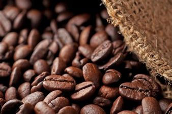

Diffrent Types of Coffe Beans
Arabica

Known as one of the most popular and well known types of coffee bean, Arabica beans are the most commonly produced variety and are considered higher quality beans. In fact, over 60% of the coffee beans in the world that are produced are Arabica variety. These beans are grown at high altitudes and need to be in an area that has a steady rainfall and plenty of shade. Perhaps one of the reasons that this is a variety of coffee bean that is seen the world over is because the trees are easy to care for, they are reasonably small and they are easy to prune too. Although they are delicate and can be affected by their environment.
Buy NowRobusta

The next variety of coffee bean is Robusta, which is the second most produced in the world. As the name hints, the Robusta bean is both hardy and is also immune to a variety of diseases too. This type of coffee bean grows best in a hot climate with irregular rainfall and can grow at a number of altitudes too. Compared to Arabica beans, those that grow on the Robusta plant have double the amount of caffeine in them, meaning that they are an excellent choice for a real boost and offer a more harsh flavour. The beans also have a smooth texture and it is often said that they even have a slight chocolate hint to them, which makes them ideal to have with milk and sugar (perhaps as an iced coffee).
Buy NowLiberica

One of the hardest types of coffee bean to come by is the Liberica bean. They are larger than the other beans and is the only one in the world that is known to have an irregular shape. Liberica beans are also unique in their aroma and some say that they are not only smoky, but they are fruity and floral too.
Buy NowExcelsa
.jpg)
Although having recently been classified as a member of the Liberica family, the Excelsa bean is vastly different in taste when compared to the Liberica coffee bean. So there you have it, a full run-through of the main types of coffee.Mostly found in the South East of Asia, it accounts for only around 7% of the worlds coffee.
Buy Now